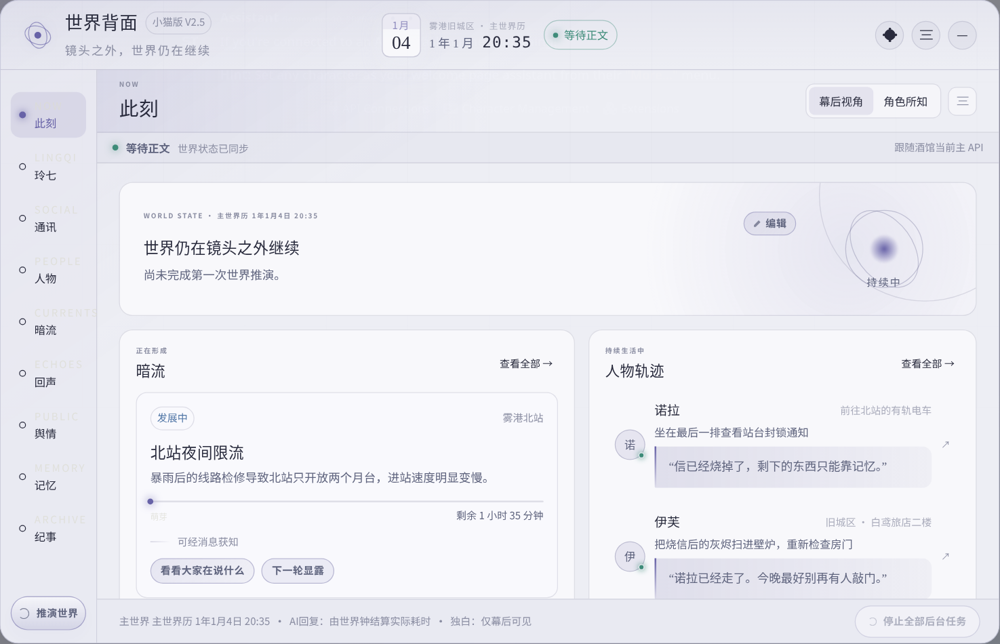

它有没有在工作？
看顶部状态和时间。只要后台在同步、时间能建立，就先别动它。
你不需要把这里每一项都看懂。多数时候，看三眼就够。
想确认后台有没有继续走、想偷看镜头外的动静，或者怀疑某个角色知道了不该知道的事。

看顶部状态和时间。只要后台在同步、时间能建立，就先别动它。
看暗流和人物轨迹。它们是后台继续走的世界，不代表下一句正文必须全部写出来。
切到“角色所知”。如果她没看见、没听见、没人告诉她，她就不该凭空知道后台秘密。
后台可以已经判断有人在尾随。可如果伊芙没看到脚印、没听见敲门、也没人告诉她，这件事就只能先待在世界背面，而不是突然从她嘴里说出来。
基本什么都不用。只有你发现世界停住了、状态明显错了，才考虑手动推演或修正。